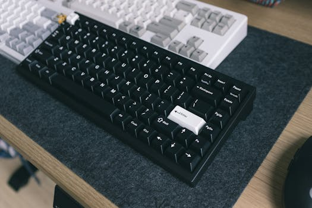

鍵盤敲越多越危險？簡立峰博士教你 AI 時代的生存法則
本文是 YouTube 影片「鍵盤敲越多越危險？簡立峰博士揭露 AI 時代的生存法則」的延伸閱讀版。 影片講了核心觀念，本文加上獨家分析和實戰建議。 影片版本：https://www.youtube.com/watch?v=J9F-Obf-IcE
影片重點回顧
前 Google 台灣董事總經理簡立峰博士指出，AI 正在改變職場的遊戲規則。麥肯錫把每個工作拆成三種能力：虛擬環境、實體世界、人際情商。結論是「鍵盤敲越多的人，越容易被取代」。但同時，OECD 預測今年全球會出現 200-300 萬家一人公司，危機中藏著巨大機會。
【獨家】你的工作有多少是「鍵盤工作」？自我檢測法

Photo by Huy Phan on Pexels簡立峰博士的觀點讓我印象深刻，但很多人聽完可能會問：「所以我到底該怎麼辦？」
我在企業培訓的時候，會請學員做一個簡單的練習：把你一天的工作列出來，然後標記每一項是「鍵盤工作」還是「非鍵盤工作」。
鍵盤工作：寫報告、回 Email、整理數據、製作簡報、寫程式、文案撰寫 非鍵盤工作：面對面溝通、客戶拜訪、現場指導、創意發想、策略討論、團隊帶領
如果你的鍵盤工作佔比超過 70%，你就需要認真思考了。不是說你會被裁員，而是你的工作中有很大一部分可以被 AI 加速甚至取代。
但好消息是，這代表你有更多時間去做那些 AI 做不到的事：建立關係、做策略判斷、創造新的商業價值。
三個轉型方向
-
從執行者變成審核者：讓 AI 先出第一版，你負責審核和優化。你的專業判斷力就是價值所在。
-
從單打獨鬥變成 AI 團隊長：學會同時操作多個 AI 工具，讓它們各司其職。文案用 ChatGPT、數據用 Claude、圖片用 Midjourney，你是指揮官。
-
從純數位走向實體連結：刻意增加面對面的互動。AI 時代最稀缺的反而是「人的溫度」。
【獨家】一人公司實戰指南：從 0 到 1 的五個步驟
Photo by Hannah Nelson on Pexels
影片中提到 OECD 預測今年全球會出現 200-300 萬家一人公司，我想進一步分享我觀察到的成功模式。
Step 1：找到你的「AI 加速區」
不是所有工作都適合一人公司。最適合的是那些「專業門檻高 + AI 可以大幅提升效率」的領域：
- 行銷顧問：策略靠你的經驗，執行（文案、素材、報告）交給 AI
- 設計工作室：客戶溝通靠你，初稿和變體交給 AI
- 培訓講師：課程設計靠你的教學經驗，講義和評估工具交給 AI
- 數據分析：商業洞察靠你的行業理解，數據處理交給 AI
Step 2：建立你的 AI 工具箱
一人公司至少需要掌握這些 AI 工具：
| 用途 | 推薦工具 |
|---|---|
| 文字生成 | ChatGPT / Claude |
| 深度研究 | Gemini Deep Research / Perplexity |
| 簡報製作 | Gamma / Beautiful.ai |
| 圖片設計 | Midjourney / Canva AI |
| 自動化 | n8n / Zapier |
| 語音轉文字 | Whisper / 會議記錄小幫手 |
Step 3：用七成成本報價
簡立峰博士提到的「七成成本」是關鍵。你不需要削價競爭，而是你的效率讓你在七成價格時仍然有合理利潤。這對客戶來說是雙贏。
Step 4：建立作品集而非名片
一人公司不需要華麗的辦公室和名片。你需要的是一個能展示成果的線上作品集。用 AI 幫你快速建立一個專業的個人網站。
Step 5：從兼職開始，不要裸辭
最安全的方式是在現有工作中驗證你的一人公司模式。先接 2-3 個小案子，確認模式可行，再考慮全職投入。
阿峰觀點
Photo by Mikhail Nilov on Pexels
簡立峰博士有一句話我反覆在企業培訓中引用：「一問一答叫抄襲，十問十答叫學習，百問百答叫創造。」
我服務過超過 400 家企業，從台積電到街口小店，發現一個共同規律：導入 AI 最成功的團隊，不是技術最強的，而是最願意改變工作方式的。
技術可以學，工具可以買，但心態的轉變才是最難的。很多資深主管第一反應是「這個 AI 回答得不好啊」，然後就再也不用了。他們不知道的是，AI 每天晚上都在進步，今天不好用不代表下個月不好用。
你是機長，AI 是機組人員。機長不需要自己開引擎，但他要知道什麼時候該讓機組人員做什麼。
AI 就像簡立峰博士說的那個隧道——有人看到暗暗的覺得是風險，有人看到盡頭的亮光覺得是機會。這個機會，可能一生只有一次。
本文提到的資源
| 工具 | 連結 | 說明 |
|---|---|---|
| ChatGPT | https://chatgpt.com | AI 對話工具 |
| Claude | https://claude.ai | AI 助理 |
| Gemini | https://gemini.google.com | Google AI（含 Deep Research） |
| Perplexity | https://www.perplexity.ai | AI 搜尋引擎 |
| Gamma | https://gamma.app | AI 簡報製作 |
影片中提到的資源
企業 AI 培訓｜阿峰老師服務過台積電、國泰金控、中華電信等 400+ 企業 → https://www.autolab.cloud
關於作者
黃敬峰（AI峰哥），企業 AI 實戰培訓專家，400+ 企業合作、10,000+ 學員。 核心心法：「會用、懂用、好用、每天用」 官網：https://www.autolab.cloud